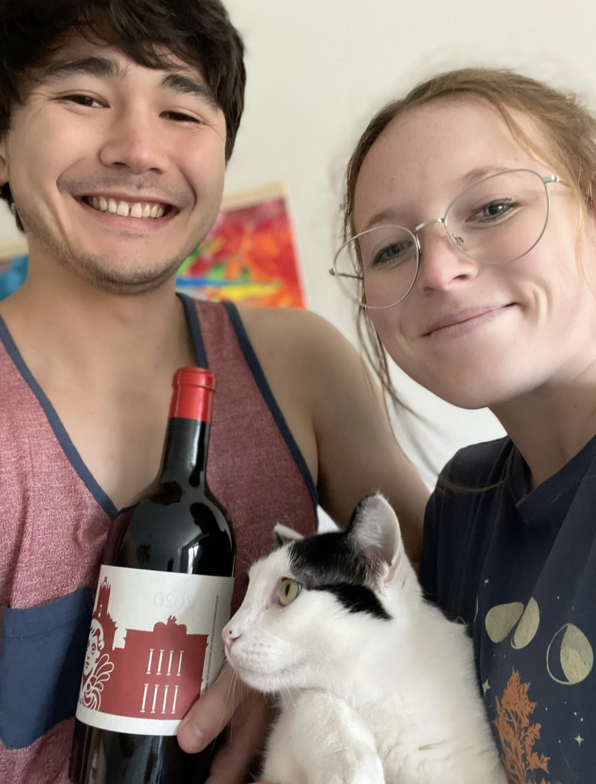
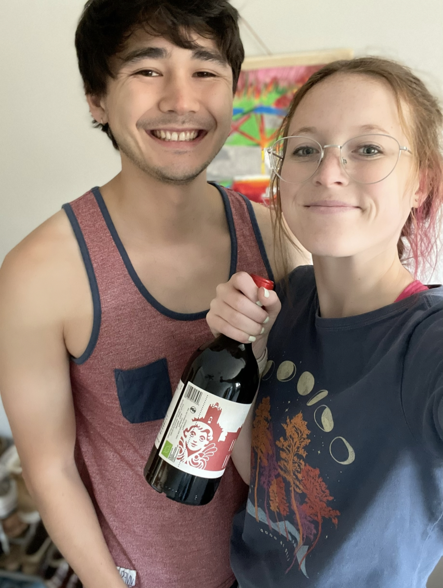

Frappato
What is it?
Frappato is a red grape primarily grown near Sicily, Italy [1]. Wines made from Frappato grapes are known for being light-bodied and having distinct aromas of grape [3]. Some DNA tests have shown Frappato to be genetically related to Sangiovese, so it is suspected that Frappato is a cross between Sangiovese and some other (yet unidentified) grape [4]. A search on Vivino or another wine database quickly reveals that Frappato also goes by many other names, including Frappato di Vittoria, Frappato Nero, Nerello, Nero Capitano, among about 5 other variations on these themes.
Primary flavors are dried strawberry, pomegranate, white pepper, tobacco, and clove [2]. Suggested pairings are foods that include roasted red peppers and sun-dried tomatoes [2]. We had this wine with an Italian casserole that has penne, roasted red peppers, sun-dried tomatoes, and mozzarella. We've been having some luck at finding rarer wines at Wall-to-Wall Wine in Lincoln; this is one such wine.
Molly's Rating and Tasting Notes
6.5. This is better than I thought it was going to be. On the nose, there's some roasty/char scents, maybe like someone just starting a charcoal grill. However, the flavors on the tongue are actually pretty fruity. It reminds me of some pomegranate juice if there was alcohol mixed in. Inoffensive finish.
Ryan's Rating and Tasting Notes
8.6. On the nose I get big whiffs of meat--similar to Texas-style brisket--and red fruit. Specifically, I am getting strong notes of strawberry, plum, and pomegranate. As the glass sits and the wine grows old with me, I am starting to pick out bready notes similar to rye. Overall, it is a very complex, boisterous, and possibly hostile nose for those of the faint of heart. Upon tasting however, the aforementioned boldness gives way to a light and delicate wine. If you're into anime, it is what you might call a tsundere of a wine. There are inklings of pomegranate, and plum, mixed with pinches of herbs and spices. On the backend, there are hints of smoke and pepper. As for the mouthfeel, it is light and doesn't coat the mouth. There is a slight acidity and zinginess that does just enough to get you interested and intrigued. The finish is short and sweet but leaves me perplexed. The tongue is dry, but the mouth salivates. Overall, a banger of a wine.
References
[1] Madeline Puckette and Justin Hammack. Wine Folly: The Master Guide. Avery - A Penguin Imprint, New York, NY, 2018.
[2] "Frappato." Wine Folly. https://winefolly.com/grapes/frappato/. Accessed: June 2023.
[3] J. Robinson (2006).
[4] M. Crespan, A. Calò, S. Giannetto, A. Sparacio, P. Storchi and A. Costacurta (2008). " 'Sangiovese’ and ‘Garganega’ are two key varieties of the Italian grapevine assortment evolution", Vitis 47 (2).
Wines we haven't finished
- None this week!